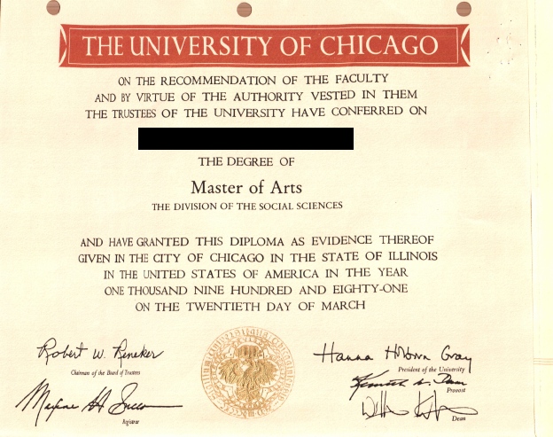
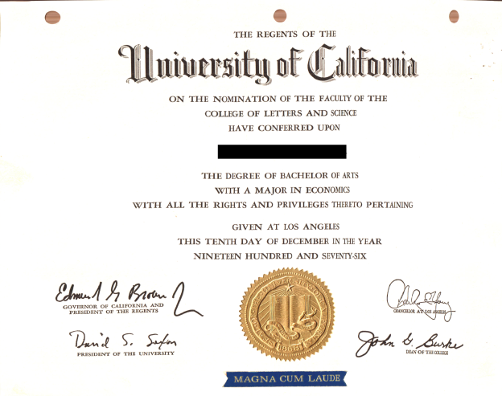

|
My legal name is "Wo Of Ideafarm". I changed my legal name in 1999 as a symbol of my decision to commit the remainder of my life to establishing and developing "IdeaFarm (tm) City", a sovereign state located on the Internet. IdeaFarm (tm) City is, according to its Constitutional Declaration, an "external association" that exists under the protective aegis of, but is not subject to, the organic law of the United States of America. IdeaFarm (tm) City - Federal Constitutional Protectorate of the United States of America, is a constitutional monarchy. I am, according to that declaration, a dual citizen of IdeaFarm (tm) City and, by birth, of the United States of America. Within IdeaFarm (tm) City, my name is "Wo'O Ideafarm". Within the United States, my legal name is "Wo Of Ideafarm".
I hold a "Ph.D. Lite" in economics from the University of Chicago. By "Ph.D. Lite" I mean what is referred to in academic circles as an "A.B.D." ("All But Dissertation"). In 1983, I received a letter from the Department of Economics certifying that I had completed all requirements for the Ph.D. other than the dissertation, and that my progress toward that degree is governed by "the old rules". By those rules, I am still technically eligible to complete the degree, although I do not expect to ever do so. (I paid an extra year of tuition in order to escape the "new rules", which impose a time limit.)
I am an educated man. What this means is that I possess something that God means for me to share. When young, I was told that I was "gifted". It was much later, for in some ways I am a slow learner, that I realized that being "gifted" means that I am only the bearer; the wonderful gifts in my possession are not for me. Bearing these gifts has been difficult, for they are heavy, and the winding switchback road that I have carried them on for many miles has been steep and slippery with ice. When I knock at your door, receive the gifts that I bring for you; do not turn me away.
My dissertation was a mathematical study that asserted that Monetary Theory, as it was then (and still is) taught, is a load of crap, is nothing more than apologetics for collusion between the banking industry and government. It is perhaps not surprising that I was not able to get my thesis proposal approved, even though my advisor told me that "I was onto something". I continued working on my research for a total of twelve years, finally completing it to my satisfaction in 1992. But 1992 was an eventful year in my life, and I have never been able to find the time to publish this mathematical study.
In 1992, while contemplating how my research might be published as an "electronic book", I conceived of what I now call the "knowledge tree". In that year, I began to write a software system that I intended to use to publish my research. In 1995, I had a version of the "IdeaFarm (tm) Electronic Book Distribution System for OS/2" working and in alpha test, but it was buggy and OS/2 was imploding in the market. I have continued to work on that software, which is now "IdeaFarm (tm) Piggyback Distributed Operating System" or "IPDOS (tm)". I used IPDOS (tm) to produce the files for this web site.
I am the product of a retail businessman father, an at-home mother, a Catholic grade school education, a public high school and college education, and five years of full time residence at a private graduate school. In the summer of 1967, between seventh and eight grade at my Catholic school, I was sitting in a classroom of the newly built public high school, waiting for a summer school class session to begin. At that moment, my senses were filled with the newness and cleanliness of the classroom, which contrasted sharply with the ancient equipment and stained ceiling tiles in the Catholic school that I attended during the regular school year. In that moment, I remember seeing clearly that public school differed from religious school in two ways. First, the building and the equipment was new and clean and wonderful. Second, the people were cold and dead. In religious school, there was a warmth, a togetherness, a sense of belonging and connection. Decades later, when I was in my late forties, I realized that my entire life had played out as if poured from that single moment. All that I have done, and all that I hope to do before I die, springs from that single observation that I had made when I was thirteen years old.
My education can be verified by contacting the University of Chicago and UCLA and providing my legal name, "Wo Of Ideafarm". Their records are supposed to have been updated to reflect my change of legal name. If you cannot obtain verification from them, please let me know.
Ph.D. Lite (A.B.D.), economics, University of Chicago, 1983
Field examinations:
Ph.D. dissertation title: "Price determination in an overlapping generations economy with producible and nonproducible capital"
A.M., social science, University of Chicago, 1981
B.A. magna cum laude, economics, UCLA, 1976
Coronado High School, 1972
Sacred Heart School, 1968
Academic honors:
Economic Perspective: I am a thoroughly "Chicago School" economist in the analytical paradigm that I use to comprehend the world. What is original in my thinking is the result of two unusual ingredients. First, as a graduate student, I realized that what was then called "The Modern Theory of Finance", could be used to rebuild, from scratch, the theoretical foundation of the field of Money and Banking. I did that, and discovered (1) that Monetarism is a crock of shit, and (2) that the U.S. economy is a feudal system, not a capitalist system, meaning that it is dominated, not by owners of plant and equipment, but rather by owners of land. Second, and much later in my life, I realized that human beings are programmable creatures, and that this fact utterly destroys many of the wonderful pronouncements of both normative and positive economics. True, economic liberty does produce stunningly beautiful and beneficial economic order, as Adam Smith claimed with his "Invisible Hand". But there is a dark side, a dark force, which I call the "Invisible Fist". The Invisible Fist operates through what I call the "thought steering industry" (advertising, education, religion, peer pressure) to enslave the people. Thought steering can be either beneficial or predatory. When it is predatory, I call it "thought assault". In my view, liberty, including economic liberty, is a good thing, but thought assault is a very bad thing. I am "pro business" in the sense that I am in favor of economic freedom and am a proponent of individual economic responsibility and opportunity. But I am "anti business" in the sense that I oppose the leading role that the business sector plays in thought assault. I am also "anti business" in the sense that I actively promote environmental sustainability and I actively oppose "consumerism". Every fall, I am seen on the streets of Mountain View actively opposing "the December shopping spree" and the commercialization of Thanksgiving and Christmas. With regard to wealth, I support the right of an individual to accumulate wealth and to dispose of it as he or she sees fit, including bestowing it upon his or her children. But I am opposed to what I perceive to be the effective enslavement of the population by the landowner class in conspiracy with government to (1) raise the price of land and to (2) effectively turn most of the population into economic, if not political, slaves.
Political Perspective: Today: I am a libertarian. I have dedicated my life to the realization of the real "American dream": Liberty, justice, and economic empowerment, for all. Every concentration of power becomes corrupt. For the people to become free, government must become small. Real economic and political freedom do not exist anywhere on the planet. Because of its history and its organic law, the United States is uniquely positioned to become a truly free society. But this will happen only when, and if, the people awaken to their duty and also to the danger of the encroaching tyranny under which they actually live.
Political Perspective: Tomorrow: The Internet will be a "New World" for our time, in the same sense that the newly discovered Americas was a New World for 16th century Europe. The Internet will, if we are vigilant and take decisive action before it is too late, become a place that is beyond the meddling, grasping reach of the territorial governments. I intend to use the IdeaFarm (tm) Piggyback Distributed Operating System, or IPDOS (tm), software to turn this vision into reality by creating a place called "IdeaFarm (tm) Space", within which "IdeaFarm (tm) City" will exist. In this vision, individuals worldwide will have territorial residency and cyberspace citizenship. The territorial governments will be reduced to merely huge "property management companies". The scope of territorial government will be drastically reduced, and will be funded solely from property taxes. Individuals worldwide will be free to reside wherever they want to, with the territorial governments competing with each other to attract residents and real estate investors.
Cultural Perspective: I am a "follower of Jesus" but not a Christian. In my opinion, there are two ways to live: the "way of love", and the "way of fear". Jesus Nazareth was the most effective teacher of the "way of love", but it can be seen as a part of the foundation of every world religion. The "way of fear" is also not particular to any one religion or culture, but is rather the oppressed condition in which culturally ignorant people live the world over. Our challenge today, both in the United States and worldwide, is to find our way back home, out of the culturally ignorant wilderness of the "way of fear", back to the warm, safe, villages of the "way of love". (There will still be strife, and sometimes war, because the villages in my vision compete for limited resources, and only the strongest survive and thrive.) The political and economic survival of the United States is at stake, as well as the prospects for liberty, justice, and economic empowerment for all, worldwide. Unselfish people must separate themselves from the selfish people, organize, and then retake control over our lives and over the course of human society. Let the predators of the wilderness, the selfish people, feed on each other!

